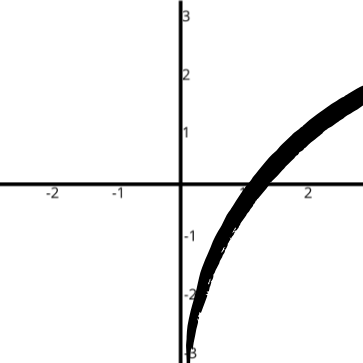

| Início | Funções Introdução | Função Afim | Função Quadrática | Função Exponencial | Função Logarítmica |
Conteúdo Extra |
A função logarítmica funciona como um 'oposto' da função exponencial. Quando você usa um logarítmo, você busca encintrar o expoente a partir da base e do resultado. A função é estruturada da seguinte baneira: "F(x) = logA(x)", onde "F(x)" representa o expoente, "A" representa a base e "x" representa o resultado da base "A" no expoente "F(x)". Já que a função logarítmica é o oposto da exponencial, o gráfico, o domínio e a imagem também serão diferentes. O gráfico da logarítmica será uma rotação do gráfico da exponencial, o domínio ⊃ ℝ e a imagem ⊃ ℝ*+ . Essa função também segue a regra de sempre ter a coordenada do resultado no 1 quando a coordenada do expoente for 0 (Exemplo, logqualquer base(1) = 0), então, nesse caso, o gráfico sempre vai passar por (1, 0).
Aproximação de um gráfico de "F(x) = log2(x)"